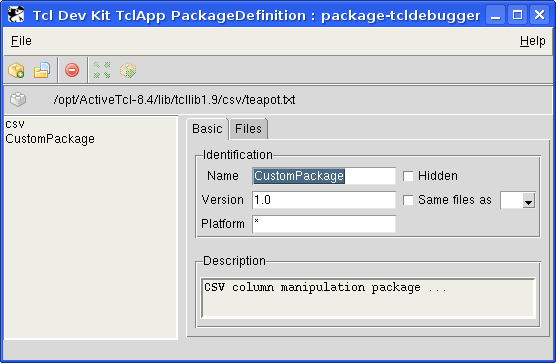
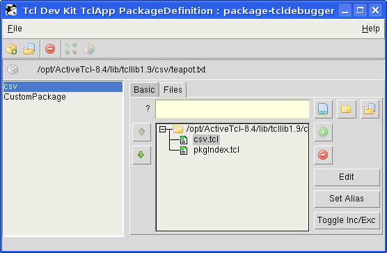

The Package Editor is a graphical application used to define Tcl packages in TEApot format (.zip and .tm files) or TclApp Package format (.tap files). Both types of packages can be used by TclApp. Creating package definitions simplifies the creation of applications in TclApp as included files do not have to be specified individually. Packages can be modified and re-used by multiple applications built with TclApp.
TEApot packages can also be hosted in a TEApot repository and made available to ActiveTcl TEAcup clients.
Numerous predefined packages in .tap format are included with ActiveTcl 8.4 and earlier. Many more packages are available from ActiveState's TEApot repository. These packages can be installed using ActiveTcl's TEAcup client. The Package Editor can be used to modify existing packages, regardless of whether they are custom packages or predefined packages included with ActiveTcl.
Multiple packages can be configured within the same Package Editor project. Each package will be displayed as an individual entity in the TclApp Package Picker dialog; however, by grouping multiple packages together into one project, you can easily maintain file sets in related packages.
To launch the Package Editor in Windows, select Tcl Dev Kit
Package Editor from the Tcl Dev Kit program group on the
Windows Start menu. Alternatively, you can invoke the Package Editor
from the command line. On Windows, enter tclpe.exe at the
command prompt. On Unix, enter tclpe at the shell prompt.
Project files can be specified at the command line. For example:
tclpe -gui myproject.tap
Types of files that can be loaded as projects include:
Use 'Ctrl-plus' and 'Ctrl-minus' to increase or decrease the displayed font size. Alternatively, use 'Ctrl-mouse wheel'.
To create a project for packages in TEApot format, select New Project (Teapot) from the File menu. A new TEApot package project is created by default when the Package Editor is started.
Packages can be added to a project individually by clicking the Create a New Package button, or imported automatically by clicking the Scan Directory button. In most situations where the Tcl files you want to package exist in a particular directory (and nested sub-directories), the Scan Directory is the simplest way to begin.
Scan Directory opens a dialog box for choosing a source directory. Enter the directory to scan in the Destination field, or click the Browse button on the right.
The Package Editor scans the source directory for a pkgIndex.tcl file. If present, it will use this as a starting point for a heuristic scan for packages and files to be included in the project. If it is not present, the path displayed in the Destination field will be highlighted, indicating that scanning is not possible.
Click Run to initiate the scan. The output pane below displays information on the scanning progress. Warnings are highlighted in yellow, errors are highlighted in red.
Packages discovered in the scan are added to the project and appear in the left pane where they can be reviewed.
Note: TEApot projects generate a file called teapot.txt in the source directory when the project is saved, so the source directory must be writable.
The Basic tab is used to record general
information about the package. This information is for package
administration purposes; a subset of the information is displayed in
TclApp's Package Picker dialog, and can be used with
the -pkg option in the command-line version of TclApp.
This tab includes the following fields:
The Files tab is for specifying files for inclusion and exclusion for the package. Scan Directory will populate the Included Files list with the relevant files discovered in the scan. The Included Files and Excluded Files fields accept glob style wildcards (e.g. "*" and "?") for specifying multiple files with a particular extension or text string in the name.
To exclude files, use the Remove button to take files out of the list, or if glob style matching is being used in Included Files, by adding specific files to the Excluded Files list.
The Requirements tab is for specifying the package requirements (Tcl version, module dependencies, etc.). To add a requirement, enter the package name or version in the entry field and click the Add button. Requirements must be entered in TEApot's entity reference syntax. If the syntax is incorrect, the text in the entry field is highlighted, and a tooltip provides information on the error.
The Recommendations tab is for specifying packages which are beneficial to, but absolutely necessary for the functioning of the module. The interface is the same as the Requirements tab.
TEApot packages can contain Category and Subject meta data to make
it easier to find them in a TEApot repository (i.e. using teacup
search ...). The Category field is for a one
line sentence, and the Subject / Key Phrases is for a
list of words and phrases.
Add a Category value by entering it in the Category text field. Add items to the Subject list by entering words or phrases in the Subject / Key phrases text field, then clicking the Add button.
In addition to the Category and Subject meta data, other arbitrary and predefined meta data can be added to TEApot packages as key/value pairs. See Keywords with predefined semantics for more information on TEApot's "reserved" keywords.
Enter key/value pairs in the Keyword and Value columns respectively. Hitting 'Enter' adds the current pair, clicking the Remove button deletes the adjacent entry.
After configuring a TEApot package, select File | Save Project As to save the package definition in a file called teapot.txt in the source directory. This directory must be writable.
Once a project has been configured with all the necessary files and data, a TEApot package archive can be created. The Generate TEApot Archives button brings up a dialog box with the following options:
Once these options have been set, click the Run
 Top
Top
To create a project for packages in TclApp (.tap) format, select New Project (Tap) from the File menu.
The Scan Directory feature works essentially the same in a Tap project as in a TEApot project, but does not generate a teapot.txt file in the scanned directory. See Scanning Directories above for more information.
To add a package to a project, click Create new package. These packages can be added to a new project or added to a project that has already been populated by Scan Directory.
By default, new packages within the project are named "New Package n", where n is an incrementing number. This can be modifed in the Name field on the Basic tab.
The Basic tab is used to record general information about the package. This information is for package administration purposes; a subset of the information is displayed in the TclApp Package Picker dialog, and can be used with the -pkg option in the command-line version of TclApp.
This tab includes the following fields:
-pkg switch with the command-line version of TclApp.-pkg switch with the command-line version of
TclApp (specified in the form of PKGNAME-VERSION).To copy a list of files from an existing package to a new package, first open the existing package using the File | Load Project menu option. Then click the New Package button.
While the new package is selected in the package list (on the left side of the Package Editor), check the Same files as box, and select the desired package from the drop-down list.
If you are creating multiple new packages at the same time, note that only the packages that were opened before the current package will be available in the Same files as drop-down list. For example, if you create a new package called "foo", and then create a new package called "bar", the "foo" files will be available to the "bar" package, but the "bar" files will not be available to the "foo" package.
Use the Files tab to add files to the package. Files can be specified individually (beneath a "base" directory), or can be specified as a subset of files under a directory (for example, using wildcards).
Use the arrow buttons on the left side of the file display to move files and directories up and down the list. For example, files can be moved from one directory to another using these buttons.
Before adding individual files, you must specify a base directory. The base directory can be any directory that is above the desired file(s). To add a base directory, enter the name of the directory in the field at the top of the form, or click the Folder button and browse to the desired directory.
Files can be added by either manually entering the name in the field at the top of the form, or by browsing for the file using the Files button. When manually entering the file name, you may use wildcards to select groups of files with similar name characteristics. You will not be able to add a file unless a base directory (that exists above the location of the file in the filesystem hierarchy) is selected in the file list.
Use the "Files in Directory" button to select both a base directory and all the files and directories beneath it.
The alias button is used to specify an alternate name and / or location for
a file. This corresponds to TclApp's -alias command-line switch.
It can be used in conjunction with the TclApp -relativeto and
-anchor switches to configure the destination filesystem.
Use the Toggle Incl/Excl button to exclude files or directories from the TclApp application without removing from the package definition.
By default, only absolute paths can be specified as the base directory. This reduces the portability of package definition files, as absolute paths are dependent on the configuration of the system where the package definition file was created.
By replacing absolute paths with "placeholders", package definition files can
be used on systems that do not necessarily share the same configuration. For
example, the image above shows the use of the @TCL_LIBDIR@
placeholder. When TclApp builds an application based on this package definition,
it will substitute the lib directory beneath the installation
directory of the Tcl Dev Kit on the system where TclApp is run.
The following placeholders can be used in place of an absolute directory specification:
FOO/lib and
BAR/lib, then @TDK_LIBDIR@ is set to FOO/lib
for a tap file named FOO/lib/sub/sub.tap, and set to
BAR/lib for a file named BAR/lib/pkg/pkg.tap
To substitute a placeholder for an absolute path, click on the desired folder in the list, then click Edit and enter the desired placeholder.
After configuring a package, select File | Save Project As to save the package definition in a project file with a .tap extension.
Packages are added to TclApp projects using the Package Picker button on the Files tab of the graphical TclApp. If you are using the command-line version of TclApp, use the -pkg switch followed by the package name.
To edit an existing package, select File | Load Project, and open the desired package file. The package descriptions and associated files will be displayed on the relevant tabs. Make the desired changes to the package(s), and then click File | Save Project to save the changes.
To edit or delete files from a package, select the Files tab. Click on the desired files or directories in the list, then click Edit (to change the file or directory name or location) or Delete (to delete the file from the package).
To delete an existing package, select File | Load Project, and open the desired package file. Click the Delete button.